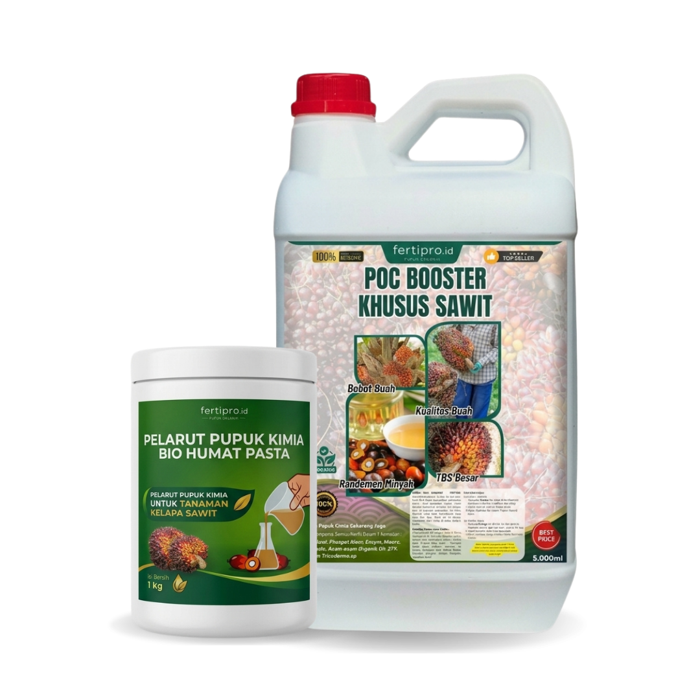
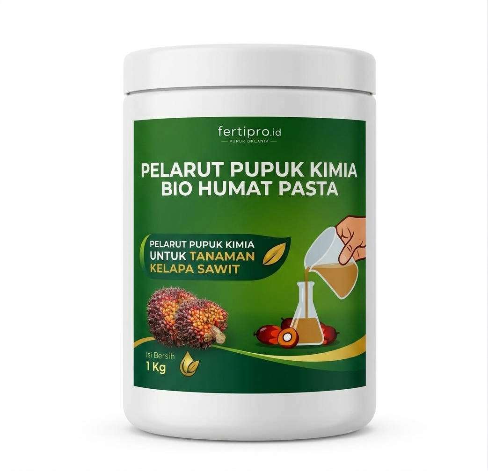
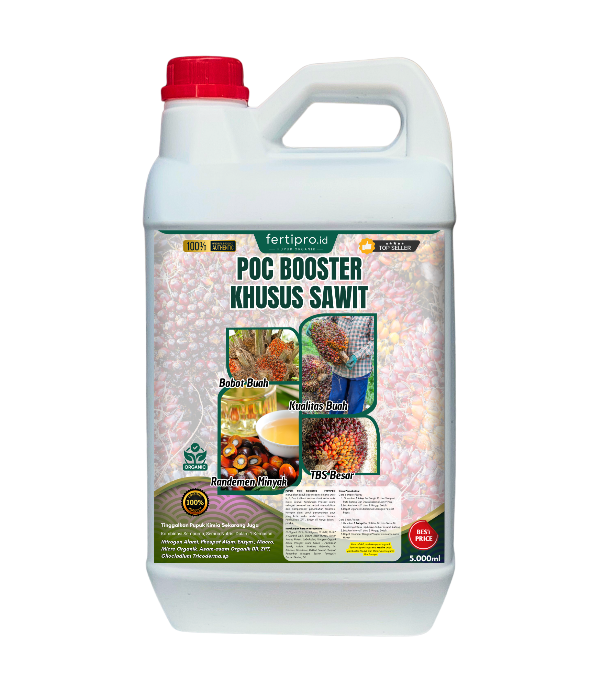
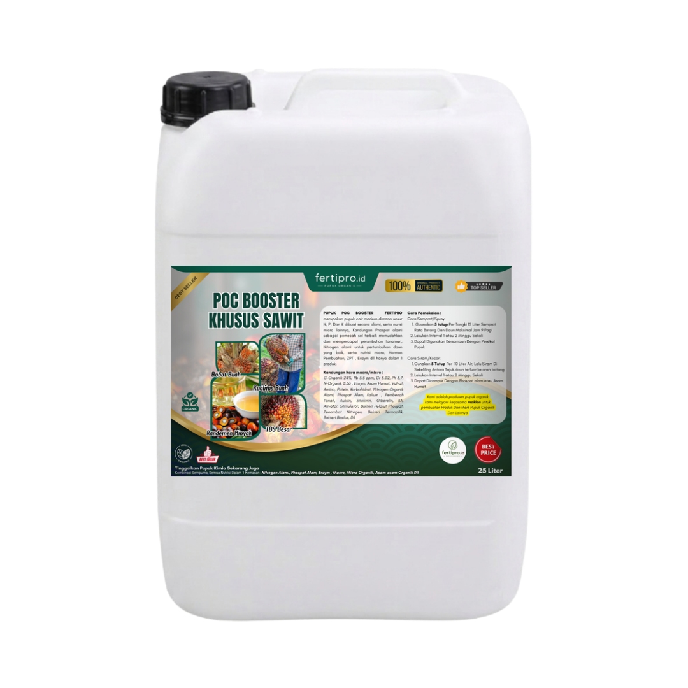
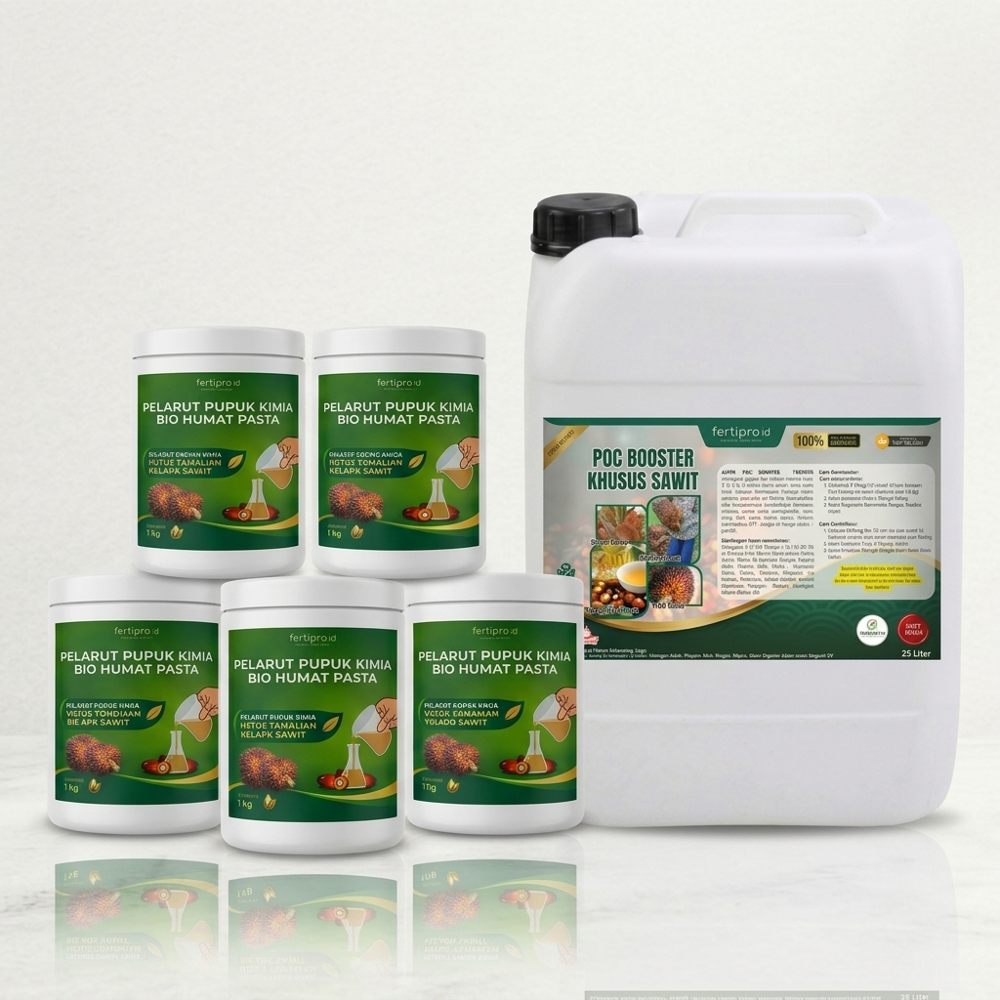
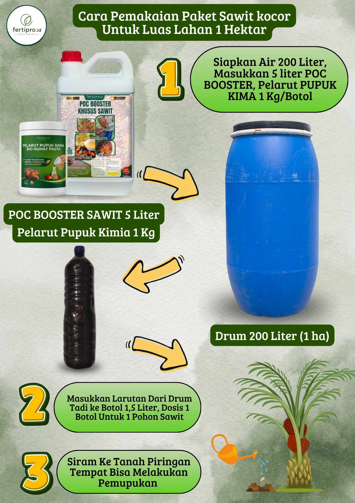

Duet Bio Humat Pasta (Pelarut Residu Kimia) + POC Booster Khusus Sawit (C-Organik 24% & ZPT). Piringan gembur, bunga betina lebat, dan HEMAT BIAYA PUPUK HINGGA 75%!

Pohon mogok berbuah berbulan-bulan, pelepah kaku, dan bunga dompet mudah busuk atau rontok.
Biaya pupuk kimia makin mahal, namun hasil tonase panen tidak sebanding dengan modal yang keluar.
Residu pupuk kimia menumpuk di tanah masam membatu, sehingga pupuk sulit diserap oleh akar pohon.
Janjang TBS enteng dan kopong tanpa minyak tebal, membuat pendapatan hasil panen menurun drastis.

Pelarut Pupuk Kimia & Pembenah Tanah


Nutrisi Pemacu Bunga & Bobot Buah TBS
Pelepah kaku mulai lentur mekar, daun berubah hijau pekat berkilau.
Bakal bunga betina bermunculan serempak di setiap ketiak pelepah (putus masa trek).
Janjang TBS padat membesar, brondolan rapat berminyak, tonase RAM naik!
Geser atau masukkan luas kebun untuk rekomendasi paket otomatis.
100% Bebas Penipuan: Bayar di Tempat (COD) saat barang sampai!
Untuk ± 133–140 pokok sawit (1 Drum 200L)
Untuk ± 665–700 pokok sawit (5 Drum / 1 Tandon 1.000L)


Masukkan 1 toples (1 Kg) Bio Humat Pasta & 5 Liter POC Booster ke dalam drum. Aduk 2-3 menit hingga larut rata.
Ambil larutan menggunakan botol bekas air mineral 1,5L. 1 botol penuh adalah dosis tepat untuk 1 pokok sawit.
Siramkan ke sekeliling tanah piringan pohon di zona perakaran aktif. 1 Drum habis untuk 133 pokok (1 Hektar).
Ulasan jujur dari pekebun yang telah membuktikan lonjakan hasil panen dan efisiensi biaya bersama Fertipro.
"Pelepah sawit yang tadinya kaku kuncup langsung melentur di minggu ketiga. Sekarang tandan buah muncul muter rapat bertingkat. Biaya pupuk kimia bisa saya hemat hingga 75% tapi tonase panen malah naik pesat!"
"Paket Jumbo 25 Liter mantap sekali untuk kebun 10 hektar. Cukup bawa 2 jerigen besar dan dicampur di tandon 1.000 liter pikap. Hasil timbangan di RAM naik hampir 30%!"
"Layanan COD sangat amanah, paket dibungkus tebal bubble wrap kardus kuat. Barang sampai di tangan baru saya bayar kurir. Pohon sawit yang lama trek sekarang aktif bunga betina."
"Bio Humat Pastanya juara! Tanah piringan yang tadinya keras membatu bekas pupuk kimia lama sekarang jadi gembur hitam. Janjang buah TBS montok padat dan berminyak tebal."
"Hemat biaya jutaan rupiah tiap musim pemupukan. Cuma Rp 2.900-an per batang pohon, tapi performa hasil panennya jauh melebihi pupuk kimia yang mahal."
"Awalnya saya coba 1 paket untuk 1 hektar. Karena hasilnya nyata dalam 1 bulan, langsung repeat order lagi untuk seluruh kebun. Pelayanan CS nya juga sangat ramah dan jelas."
Isi data pengiriman. Pesanan otomatis terhubung ke WhatsApp CS Resmi Fertipro.
FERTIPRO INDONESIA melayani Maklon Pupuk Organik (Private Label) dan keagenan distributor kebun sawit se-Indonesia. Formulasi kustom, izin Kementan, desain kemasan, dan MOQ bersahabat.
Kapasitas ribuan liter per hari siap support brand Anda